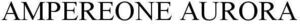

Trade Mark Journal No.2025/025 20 June 2025
WO0000001857840 (9)
Office of origin: United States of America
Date of International Registration:7 April 2025
Date of designation in the UK:
7 April 2025

- Class 9
- Semiconductor chips; semiconductors; computer hardware; downloadable computer software for operating microprocessors; computer servers; microprocessor modules; microprocessor subsystems comprised of one or more microprocessors, central processing units (CPUs), CPU cores, and downloadable software for operating the foregoing; computer systems comprised of silicon based microprocessors, computer servers, and recorded and downloadable software for operating computing systems used primarily in datacenters, edge/remote environments, and cloud computing; semiconductor integrated circuits; microprocessors; semiconductor devices; silicon based microprocessors; computer accelerator boards; computer accelerator cards; computing memory modules; computing add-in circuit boards, computer network servers, and recorded and downloadable software sold as components of computer hardware systems for operating computing systems used in datacenters, cloud computing, machine learning, deep learning, natural language generation, statistical learning, supervised learning, un-supervised learning, data mining, predictive analytics, and inferencing; neural networks comprised of computer hardware and downloadable artificial intelligence software; edge computing hardware and downloadable software, namely, artificial intelligence, machine learning, and deep learning software for use in applications running on edge computing infrastructure; computer hardware to support artificial intelligence, machine learning, deep learning, cognitive computing, data mining, computer vision, predictive analytics, and inferencing; computer hardware, downloadable artificial intelligence software, and computer systems comprising computer hardware, microprocessors, computer accelerator cards, and software to support applications for autonomous navigation of motor vehicles and power management of electronic vehicles (EVs); computer hardware and downloadable artificial intelligence software for use in semiconductor manufacturing systems; downloadable software using artificial intelligence and machine learning for data processing in the field of business and technology; artificial intelligence platforms comprised of computer hardware and downloadable software for high performance computing and distributed computing; computer hardware and downloadable software for artificial intelligence high performance computing; computer hardware and downloadable software for processing, generating, understanding, and analyzing natural language; computer hardware for use in large language models and artificial intelligence.
Ampere Computing LLC
Representative: Parna A. Mehrbani Tonkon Torp LLP, 888 SW Fifth Ave., Suite 1600, Portland OR 97204, UNITED STATES OF AMERICA